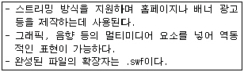
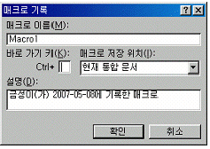
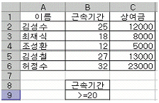
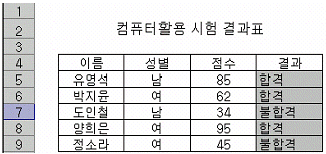
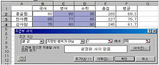
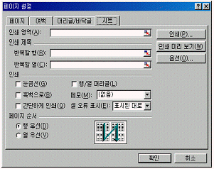
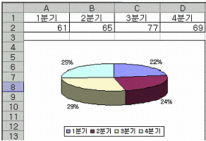
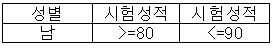

컴퓨터활용능력-2급 (2007-05-06 기출문제)
1과목: 컴퓨터 일반
1. 다음중 한글 Windows XP [제어판]의 [디스플레이]에 관한 설명으로 옳지 않은 것은?
- [바탕화면]탭은 바탕 화면의 배경을 사용자가 임의로 바꿀 수 있게 지원한다.
- [화면보호기]탭은 시스템을 켜둔 채 정해진 시간 동안 마우스나 키보드를 사용하지 않으면 모니터를 보호하기 위해 화면 보호기의 작동 여부를 설정한다.
- [설정] 탭은 바탕화면의 글꼴의 크기만 변경 할 수 있다.
- [화면배색]탭은 창 및 단추 스타일을 변경할 수 있다.
(정답률: 73%)

2. 다음 중 Windows XP에서 플러그 앤 플레이(Plug & Play)기능으로 가장 적절한 것은?
- 플러그 앤 플레이 기능을 사용하기 위해서는 하드웨어 제조사와 모델명을 반드시 알아야 한다.
- 플러그 앤 플레이 기능은 새로운 하드웨어를 자동으로 감지하며 스스로 필요한 소프트웨어를 설치한다.
- 모든 하드웨어 주변기기를 플러그 앤 플레이 기능으로 설치할 수 있다.
- 새로운 하드웨어는 반드시 제어판에서 새 하드웨어 추가 마법사를 더블 클릭하여 설치하여야 한다.
(정답률: 71%)
3. 컴퓨터의 기억장치 중 고속의 처리 순으로 나열된 것은?
- 레지스터 - 캐시메모리 - 주기억장치 - 보조기억장치
- 주기억장치 - 보조기억장치 - 캐시메모리 - 레지스터
- 캐시메모리 - 주기억장치 - 보조기억장치 - 레지스터
- 레지스터 - 주기억장치 - 캐시메모리 - 보조기억장치
(정답률: 68%)
4. 입출력장치와 기억장치 사이의 동작속도 차이를 극복하기 위해 필요한 것은?
- 모뎀(modem)
- 버퍼(buffer)
- 플래시 메모리(Flash Memory)
- 로더(loader)
(정답률: 45%)
5. 다음은 한글 Windows XP [탐색기]에서 텍스트파일(.txt 파일)을 여는 방법을 설명한 것이다. 가장 거리가 먼 것은?
- 워드패드 프로그램을 실행하고, <열기>메뉴를 통하여 해당 파일을 불러온다.
- 그림판 프로그램을 실행하고, <열기>메뉴를 통하여 해당 파일을 불러온다.
- 해당 파일을 선택한 후에 마우스의 오른쪽 버튼을 눌러서 팝업메뉴가 나오면 “열기”항목을 선택한다.
- 해당 파일이 선택되어 있는 상태에서 [Enter]키를 누른다.
(정답률: 68%)
6. 다음중 한글 Windows Xp의 [탐색기] 기능에 대한 설명으로 가장 옳지 않은 것은?
- Windows 탐색기는 컴퓨터에 있는 파일, 폴더 및 드라이브의 계층적 구조를 표시한다.
- Windows 탐색기를 사용하여 파일 및 폴더를 복사하고, 옮기고, 이름을 바꾸고 검색할 수 있다.
- Windows 탐색기에서 Num Lock 숫자 키 패드의 별표(*)를 사용하면 선택한 폴더를 축소할 수 있다.
- Windows 탐색기에서 인쇄 기능을 사용하여 문서를 열지 않고도 바로 인쇄할 수 있다.
(정답률: 49%)
7. 다음 중 인터넷에서 사용하는 사용자 ID와 패스워드를 의미하는 용어는?
- Account
- Firewall
- Proxy
- Applet
(정답률: 65%)
8. 다음 중 한글 Windows Xp에서의 프린터 스풀(Spool)기능에 대한 설명으로 가장 옳지 않은 것은?
- 프린터와 같은 저속의 입출력 장치를 CPU와 병행하여 작동시켜 컴퓨터의 전체 효율을 향상시켜 준다.
- 프린터가 인쇄 중이라도 다른 응용 프로그램을 실행할 수 있다.
- 인쇄 대기 중인 문서에 대해서는 용지방향, 용지공급 및 인쇄 매수와 같은 설정을 변경 할 수 있다.
- 기본적으로 모든 사용자는 자신의 문서에 대한 인쇄를 일시 중지, 계속, 다시 시작, 취소할 수 있다.
(정답률: 61%)
9. 다음 메신저 서비스를 이용하여 할 수 있는 일이 아닌 것은?
- 상대방과 채팅을 할 수 있다.
- 내 컴퓨터에 있는 파일을 상대방에게 보낼 수 있다.
- 상대방이 메신저에 접속되어 있는 지의 여부를 알 수 있다.
- 상대방의 수락 없이 컴퓨터에 있는 프로그램을 마음대로 실행할 수 있다.
(정답률: 85%)
10. 다음의 하나의 분류 기준에 의하여 컴퓨터를 분류한 것이다. 다음 중 분류 기준이 다른 것은?
- 하이브리드컴퓨터
- 메인프레임컴퓨터
- 마이크로컴퓨터
- 슈퍼컴퓨터
(정답률: 42%)
11. 다음 중 가상 메모리(Virtual Memory)에 대한 설명으로 옳지 않은 것은?
- 주기억장치의 용량보다 큰 대용량의 프로그램을 수행할 수 있는 장점이 있다.
- 한글 Windows Xp는 하드디스크의 일정 영역을 가상메모리로 사용한다.
- 가상 메모리를 사용하게 되면 메모리 용량이 부족할 때 SWAP이 자주 발생하게 되며, 이로 인해 처리 속도가 떨어질 수 있다.
- 가상 메모리 페이징 파일의 크기는 사용자가 임의로 변경할 수 없다.
(정답률: 37%)
12. 고급언어로 작성한 원시 프로그램을 기계어인 목적 프로그램으로 번역하는 프로그램은?
- 어셈블러
- 컴파일러
- 유틸리티
- 프레젠테이션
(정답률: 55%)
13. 다음에서 설명하는 웹 애니메이션 제작 프로그램으로 가장 적합한 것은?

- Auto CAD
- Flash
- CSS
- Front page
(정답률: 64%)
14. 다음 중 음반 CD에 가까운 음질을 유지하면서 MPEG에서 규정한 오디오 압축 방법을 따르는 소리 파일은?
- MID 파일
- MP3 파일
- AVI 파일
- WAV파일
(정답률: 66%)
15. 다음중 파일을 삭제하였을 때 휴지통에 보관되는 경우의 방법으로 옳은 것은?
- [내문서]의 [파일] 메뉴에서 삭제한 경우
- 플로피 디스크나 네트워크에서 삭제한 경우
- 휴지통의 크기보다 큰 파일을 삭제한 경우
- 휴지통의 크기를 0%로 지정하여 삭제한 경우
(정답률: 77%)
16. 다음중 Windows XP에서 실행 중인 프로그램 사이의 작업 전환을 위한 바로가기 키는?
- Alt+Enter
- Alt+F4
- Alt+Tab
- Alt+Delete
(정답률: 78%)
17. 인터넷의 보안에 대한 해결책으로 공개키(Public Key)를 이용한 암호화 기법이 있다. 이 기법에서는 암호키(Encryption Key) 두 개의 키를 사용하는데, 공개 여부에 대한 설명으로 맞는 것은?
- 암호화키와 해독키를 모두 공개한다.
- 암호키와 해독키를 모두 비공개한다.
- 암호키는 공개하고 해독키는 비공개한다.
- 해독키는 공개하고 암호키는 비공개한다.
(정답률: 54%)
18. 다음 중 프로그램에 대한 설명으로 옳지 않은 것은?
- 알집 프로그램은 파일을 압축하거나 압축을 풀 때 사용한다.
- 메모장을 사용하여 서식 또는 그래픽이 들어 있는 텍스트 파일을 만들거나 편집 할 수 있다.
- 백신 프로그램은 바이러스 감염 여부를 점검하고 치료할 수 있다.
- PDF 뷰어는 PDF(Portable Document Format)형식의 파일을 볼 수 있다.
(정답률: 77%)
19. 다음은 인터넷 용어이다. 나머지 셋과 가장 관련이 없는 것은?
- VoIP
- WAP
- 와이브로(WiBro)
- HSDPA
(정답률: 32%)
20. Windows XP에서 사용자 네트워크 내의 이름이 “server"인 컴퓨터의 공유폴더”share"에 엑세스하기 위한 주소 입력형식으로 알맞은 것은?
- \server\share
- \server\share$
- \\server\share
- \\server\share?
(정답률: 55%)
2과목: 스프레드시트 일반
21. 다음 중 '하이퍼링크 삽입의 대화상자로 링크를 만들 수 없는 것은?
- 전자 메일 주소
- 매크로가 연결된 단추나 그래픽
- 새 통합 문서
- 현재 통합 문서
(정답률: 51%)
22. 2개 이상의 Excel파일에 대하여 공통으로 실행할 수 있는 매크로를 작성하고자 할 때 다음의 대화상자에서 올바르게 설정하는 방법은?

- 바로 가기 키에서 설정한다.
- 매크로 저장위치를 ‘현재 통합 문서’로 한다.
- 매크로 저장위치를 ‘새통합문서’로 한다.
- 매크로 저장위치를 ‘개인용 매크로 통합문서’로 한다.
(정답률: 48%)
23. 다음 중 [A1] 셀에 123.567을 입력한 후 셀 서식을 #,##0.0 으로 설정하였을 때 [A1] 셀에 표시되는 결과로 옳은 것은?
- #123.56
- 123.5
- 123.6
- 0,123.0
(정답률: 56%)
24. 다음 표에서 근속기간이 20년 이상인 경우의 상여금의 총 합계를 구하는 함수 식으로 옳은 것은?

- =SUMIF(B1:B6,B8:B9,C1:C6)
- =SUM(C2:C6)
- =DSUM(A1:C6,3,B8:B9)
- =COUNTIF(B2:B6,B9)
(정답률: 43%)
25. [다른이름으로 저장]메뉴 중 [도구]-[일반옵션]메뉴에서 설정할 수 있는 기능이 아닌 것은?
- 백업 파일 항상 만들기
- 열기/쓰기 암호 설정
- 읽기 전용 확인
- 통합 문서 공유
(정답률: 41%)
26. 다음 함수 식의 설명 중 옳은 것은?
- LARGE - 인수 중에서 가장 큰 값을 구한다.
- SMALL - 인수 중에서 가장 작은 값을 구한다.
- COUNTA - 값이 있거나 비어있지 않은 셀의 개수를 구한다.
- COUNTIF - 인수 중에서 숫자 데이터의 개수를 구한다.
(정답률: 59%)
27. 워크시트에서 부분합의 기능을 이용하여 성별로 점수 평균을 구하고자 한다. 부분합을 실행한 결과가 바르게 나오기 위해 가장 먼저 작업해야 하는 것은?

- 평균 필드를 점수 필드 옆에 삽입해야 한다.
- 성별 필드를 기준으로 정렬해야 한다.
- [부분합] 대화상자에서 [새로운값으로대치]를 설정해야 한다.
- 점수 필드를 결과 필드 옆으로 이동해야 한다.
(정답률: 58%)
28. 다음은 차트의 구성요소에 대한 설명이다. 옳지 않은 것은?
- X축(항목축)은 데이터 계열을 포함하는 숫자 값을 나타낸다.
- 데이터 테이블은 차트의 원본데이터를 표시한다.
- 데이터 레이블은 데이터 계열에 대하여 값이나 데이터 항목을 표시한다.
- 추세선은 특정한 데이터 계열에 대한 변화 추세를 파악하기 위해 표시하는 선이다.
(정답률: 45%)
29. 다음중 데이터가 입력된 셀에서 <Del> 키를 눌렀을 때의 상황에 대한 설명으로 옳지 않은 것은?
- 셀에 설정된 서식은 지워지지 않고 내용만 지워진다.
- 셀에 설정된 내용, 서식이 함께 모두 지워진다.
- [편집]-[지우기]-[내용]을 클릭한 것과 동일하다.
- 마우스 오른쪽 버튼을 누른 후 표시되는 단축 메뉴에서 <내용지우기>를 클릭해도 된다.
(정답률: 60%)
30. 다음중 엑셀의 통합 기능에 대한 설명으로 옳지 않은 것은?
- 사용할 데이터의 형태가 다르더라도 같은 이름표를 사용하면 항목을 기준으로 통합할 수 있다.
- 통합할 여러 데이터의 순서와 위치가 동일할 경우 위치를 기준으로 통합할 수 있다.
- 여러 시트에 입력되어 있는 데이터들은 하나로 통합할 수 있지만, 다른 통합 문서에 입력되어 있는 데이터를 통합할 수는 없다.
- 계산할 함수로 ‘개수’를 선택한 경우에는 문자열 데이터의 개수를 계산할 수도 있다.
(정답률: 57%)
31. 다음과 같이 조건부 서식을 설정하였을 때 ‘조건에 맞으면 적용할 서식에서 지정한 서식이 적용되는 셀로만 묶여진 것은?

- [B2],[B3],[B4],[C3],[C4],[D3]
- [C2],[D2],[D3],[D4]
- [B2],[B3],[B4],[C3],[C4]
- [C2],[D2],[D4]
(정답률: 34%)
32. 다음의 머리글/바닥글을 편집할 때 표시되는 도구 모음 중에서 현재 쪽의 번호를 표시하는 도구는?
(정답률: 53%)
33. 다음은 [페이지 설정] 대화상자의 [시트]탭의 내용이다. 다음 설명 중 바르지 않은 것은?

- 행/열 머리글 항목은 행/열 머리글이 인쇄되도록 설정하는 기능이다.
- 인쇄 제목 항목을 이용하면 특정부분을 매 페이지마다 반복적으로 인쇄할 수 있다.
- 눈금선 항목을 선택하면 작업시트의 셀 구분선을 인쇄할 수 없다.
- 메모 항목에서 ‘없음’을 선택하면 메모가 있더라도 인쇄 되지 않는다.
(정답률: 63%)
34. 다음 중 오류값 ‘#REF!'에 대한 설명으로 옳은 것은?
- 수식이나 함수 사용에서 숫자 관련 문제 발생시 발생한다.
- 인식할 수 없는 문자열이 입력된 경우 발생한다.
- 수식에서 셀 참조가 유효하지 않았을 때 발생한다.
- 잘못된 인수나 피 연산자를 사용했을 때 발생한다.
(정답률: 51%)
35. 다음 중 함수의 결과 값이 다른 것은?
- =POWER(2,5)
- =SUM(3,11,25,0,1,-8)
- =MAX(32,-4,0,12,42)
- =INT(32.2)
(정답률: 53%)
36. 다음 중 필터 기능에 대한 설명으로 잘못된 것은?
- 필터 기능은 워크시트에 입력된 자료들 중 특정한 조건에 맞는 자료만을 추출하여 나타내기 위한 기능이다.
- 자동 필터 기능은 조건에 맞는 자료들만을 다른 곳으로 추출 할 수도 있고, 해당 시트에 표시할 수도 있다.
- 자동 필터 기능은 두 개 이상의 열에 조건이 설정된 경우 AND 조건으로 결합시킬 수는 있지만, OR 조건으로 결합시킬 수는 없다.
- 고급 필터를 사용할 때에는 먼저 조건을 시트에 입력해 두어야 한다.
(정답률: 29%)
37. 다음 중 추세선을 사용할 수 있는 차트의 종류는?
- 방사형
- 원형
- 3차원 차트
- 꺾은선형
(정답률: 54%)
38. 다음 차트에 대한 설명으로 옳지 않은 것은?

- 3차원이므로 Z축이 있다.
- 데이터 계열이 한 개다.
- 데이터 계열 이름표는 전체 값에 대한 각 데이터 계열 요소의 백분율로 나타낼 수 있다.
- 데이터 계열의 이름표는 실제 값을 나타낼 수도 있다.
(정답률: 42%)
39. 고급 필터에서 다음과 같은 조건을 설정하면 어떤 결과가 나타나는가?

- 성별이 남이고 시험성적이 80점 이상이고 90점 이하인 데이터가 추출된 결과가 표시된다.
- 성별이 남이고 시험성적이 80점 이상이거나 90점 이하인 데이터가 추출된 결과가 표시된다.
- 성별이 남이거나 시험성적이 80점 이상이고 90점 이하인 데이터가 추출된 결과가 표시된다.
- 성별이 남이거나 시험성적이 80점 이상이거나 90점 이하인 데이터가 추출된 결과가 표시된다.
(정답률: 69%)
40. 다음중 매크로 작성 시에 지정하는 바로가기 키에 대한 설명으로 옳은 것은?
- 매크로에서 지정한 것보다 엑셀의 단축키가 우선 실행된다.
- 엑셀에서 지정되어 있는 바로가기 키를 지정하면 에러가 발생한다.
- 등록된 바로가기 키는 [Ctrl]키 또는 [Ctrl]키+[shift]키와 함께 실행한다.
- 바로 가기 키는 매크로를 처음 작성할 때에만 지정할 수 있다.
(정답률: 52%)